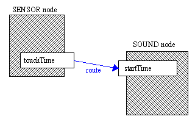
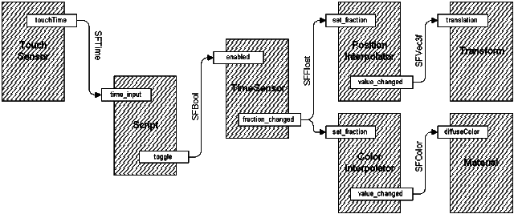

| More Power, Igor! |
Well, then. That's Parts 1 and 2 over. Part 1 covered the basics of VRML, and creating your own simple worlds. Part 2 taught you techniques for making your worlds more realistic, such as advanced objects and textures. However, our worlds are still a bit static. This is going to be fixed from now on, where we're going to cover the techniques of animation and user interaction. If you thought that what you'd created so far was good, hold on! It's about to get a lot more exciting!
This tutorial is just going to recap and add a little detail to the basic layout of the VRML interaction and animation system. This stuff was explained earlier on, but now we're going to put it in context, and give you an idea of how the VRML internal execution model works.
Wiring It Up
VRML is no longer a static language. It is a moving, living thing, which can take inputs and give different outputs. This requires some sort of internal model of execution, to govern how things change and in what order they do it. This is done by wiring together the nodes in the world, to provide paths along which messages can travel between them. These wires aren't visible, they have no representation in your world, but they glue the underlying model together, allowing fantastic effects.
Most nodes have eventIns and eventOuts, and many have exposedFields. These are how the nodes talk to the outside. eventIns are like receivers, which listen for messages called events from the outside and take them in to be processed. eventOuts are transmitters, which send events from the node to the outside. exposedFields are a combination of both. They behave as a normal field fieldname, an eventIn called set_fieldname and an eventOut called fieldname_changed. In general, the set_ and _changed parts of the name are not necessary, you can just use the fieldname of the exposedField and the execution model will work out what you mean.
Now, all this is useless if your eventOuts are just spewing events into empty space. They're not going to go anywhere. You need to connect your nodes together using ROUTEs. These are like pipes that channel events from an eventOut into an eventIn. You can connect many eventIns to one eventOut to make one event cause many things to happen. This is called fan-out. Fan-in is also allowed, where two or more eventOuts feed into one eventIn. However, this is slightly dangerous. If two events arrive at an eventIn with the same time stamp (which I'll explain in a minute), the results are undefined, so if you must use fan-in, take care to avoid this situation.
So, for example, if you have two nodes, one TouchSensor (covered later) and one Sound node, DEFed to be called SENSOR and SOUND respectively, To route the touchTime eventOut from the TouchSensor node to the startTime eventOut in the Sound node. (for instance to play a sound on a mouse click), we would use the following line of code:
ROUTE SENSOR.touchTime TO SOUND.startTime
When the TouchSensor is clicked, the sound will play. There! Interaction! As standard practice, all ROUTE statements are grouped together at the end of the file in one big group. They do not go inside any nodes, and are completely separate from the things they are routing. Also, ROUTEs can only connect events of the same type, so you cannot connect an SFTime to an SFBool for instance. If you need to, you need to write a script to convert from one type to the other.
Generating Events
So, now that we can route events around the scene, we need to know a little more about the events themselves. Events are the messages that bind the world together. Everything that moves or interacts in VRML does so because of events. They are the key to the whole thing. An event consists of two parts: the message itself, which is a value of a certain type, and a time stamp. The message value can be any type, for instance SFTime, SFString, MFNode, anything at all. If the nodes can handle it, you can send it. The time stamp is a special value which you have no control over. This is a value corresponding to the precise time at which the real-world event actually occurred, not when the event happened to be generated by the node. The actual values are not important, only how they relate to other values. An event with a later time stamp is defined as happening after one with an earlier time stamp. In general, events are processed in order of increasing time stamp. The time stamp is not available to you as a content creator, and is used only internally by the browser.
If one event is generated, and this causes another event in another node, and so on and so on, this is called an event cascade. All the events in the cascade will have the same timestamp. That is, as far as the browser is concerned, all the events happened at the same time. With fan-in to an eventIn, if two events are received with the same timestamp, the results are undefined. Whether they will both be ignored, both run, or one run, there is no way of knowing, and it will vary between browsers. Fortunately though, almost the only way to do this is to have fan-in within a single event cascade, so with careful design these situations can be avoided. Loops can also occur in event cascades, where one event causes another, which in turn causes the first. This should also be avoided in most cases. However, if it is necessary, it can be used. The execution model will only allow 1 event with a particular timestamp to be sent from each eventOut, so if loops are present, they will not loop forever, only once. This is because the a loop must be part of an event cascade, and so the second event generated by a node will have the same time stamp as the first, so will not be sent. So, loops are allowed, but will probably not function as you expect.
Initial events (events not caused by another in a cascade) can only be generated by sensor nodes and Script nodes. Other nodes can only generate events if they receive one. This means that sensors and Scripts are the key to driving VRML animation and interaction. The nodes charged with doing the actual animation are the interpolator nodes and Switch nodes, as well as the exposedFields in other nodes. These perform the actual animation function. In between these can lie other sensors, Scripts, anything at all to provide complex animation engine functions. The VRML animation model is very powerful indeed, and the possibilities are practically unlimited.
It's Alive!
So, in this fairly complex model below, A TouchSensor sends a single touchTime event (SFTime) to a Script node whenever it is activated. The Script node converts the SFTime into an SFBool and uses this to toggle the enabled field of the TimeSensor, which will then start (or stop) running. While the TimeSensor is enabled, it generates events continuously to drive a ColorInterpolator which cycles the diffuseColor of an object. These events from the TimeSensor also drive a PositionInterpolator which changes the translation field of a Transform node. You see? Simple. Sort of...
You'll learn more about the nodes involved, later, but just concentrate on the connections and flow of data for now. That's it for the basics. Now you know how to connect your nodes together to make complex behaviours, and how and why these behaviours arise. Now, we're going to start on the practical bits of it all, starting with some info on environmental sensors.